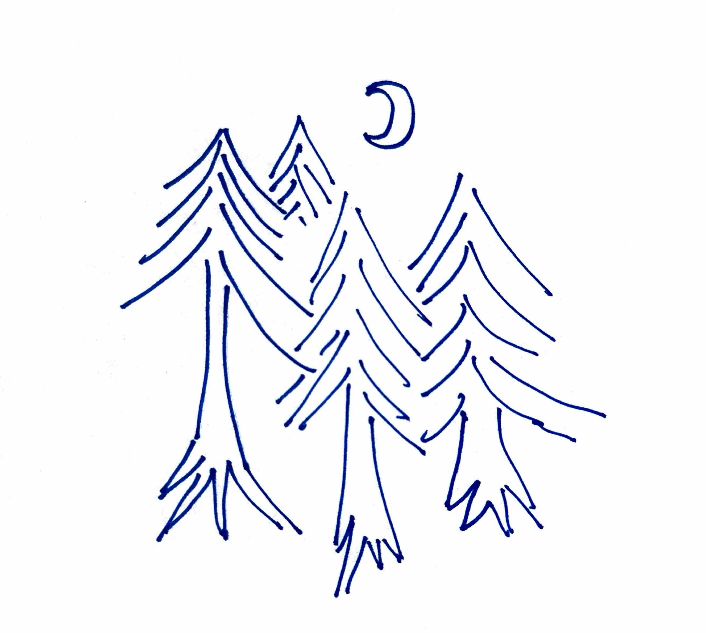
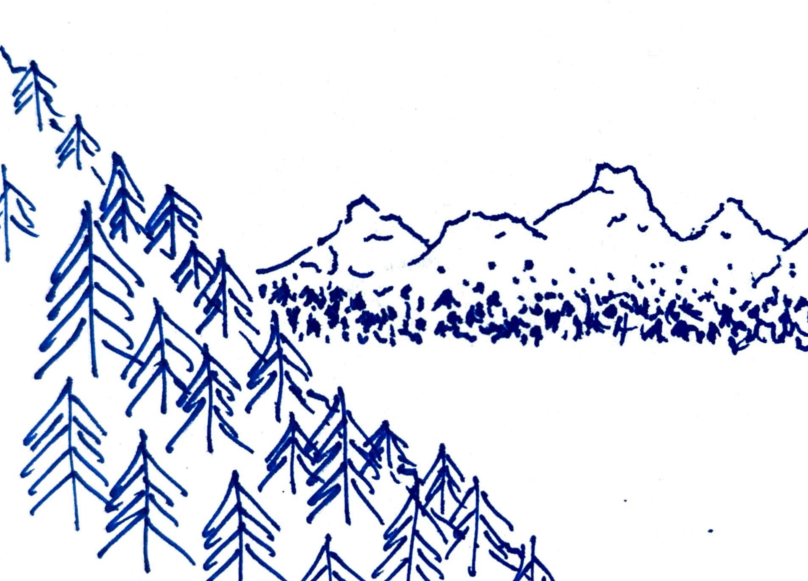
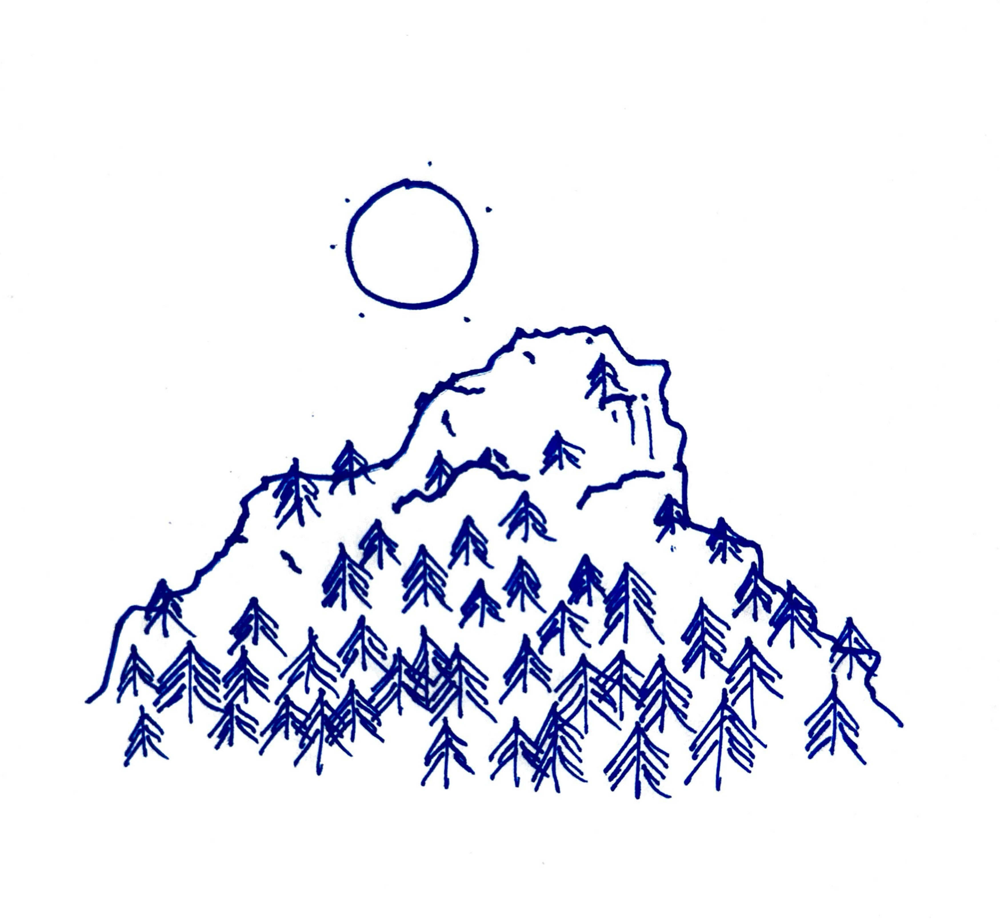
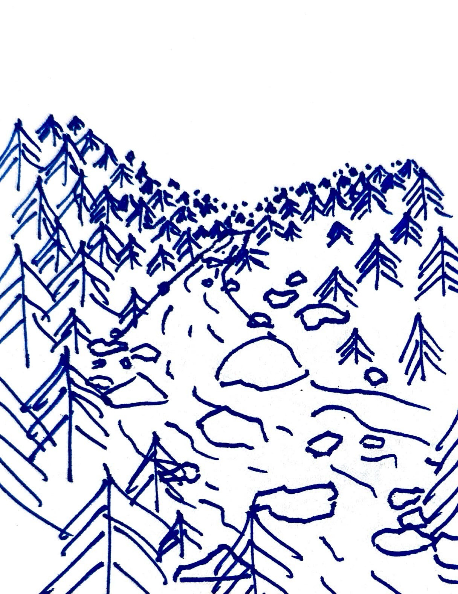
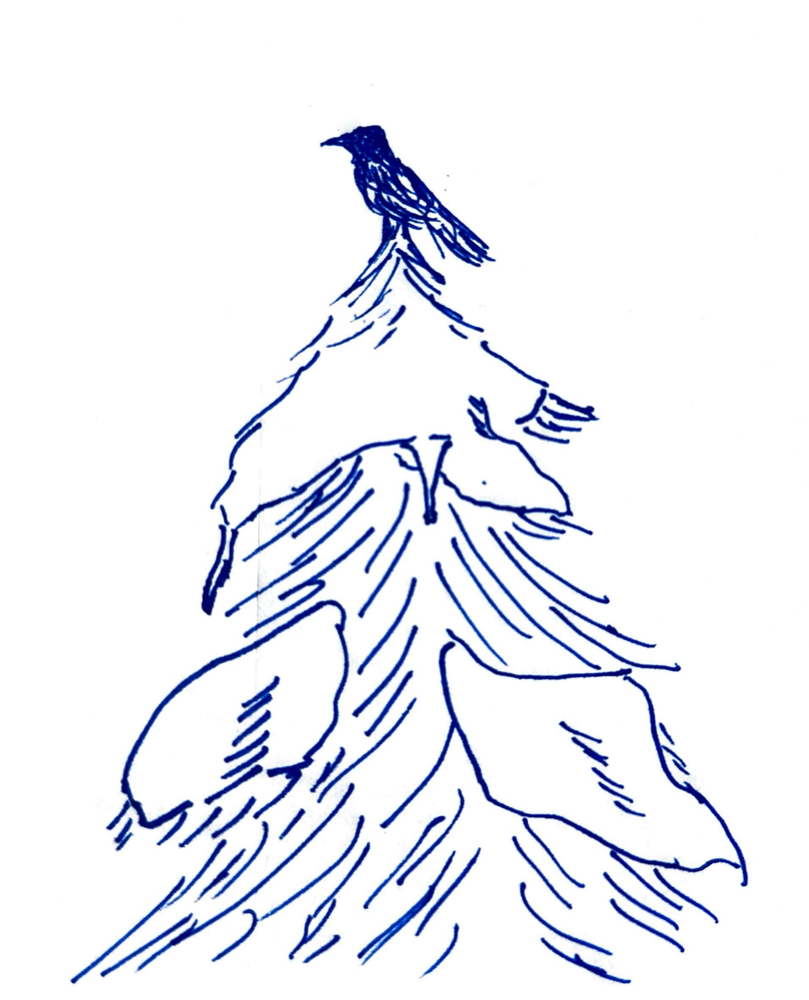
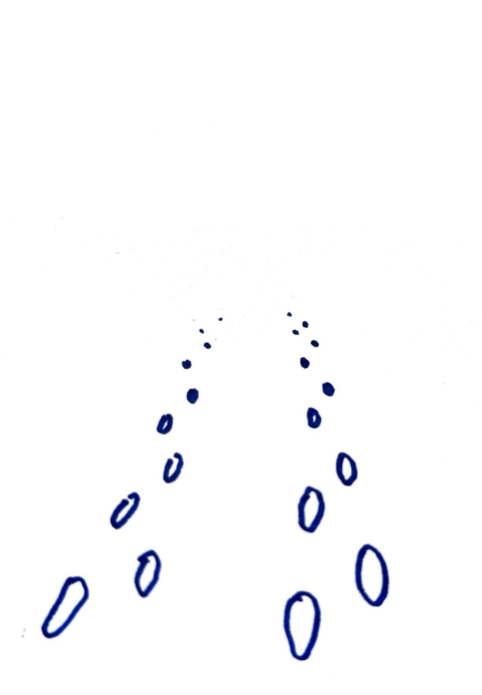

35-1 2023-12-24
It was one bleak midwinter that the news spread like wildfire of the man who disappeared. He was last seen walking north through the snowy forest toward the distant mountain ranges. He left behind many loved ones who could be heard nightly singing their laments. Into the infinite rows of slender tree trunks, each called his name and asked him why he left.
His mother asked for forgiveness and begged to be resolved of her guilt. Perhaps there was something she could have done, could have said, and her son would still be by her side. Perhaps she did not love him as much as his delicate soul needed. Was I not enough, where did I go wrong?
His father cursed him, for so selfishly abandoning what he had always taken for granted. All the blood, sweat, and tears given away to somebody who had never even the thought to return the favour. How could he do this to us, inflict such pain to me and to his very own mother. He owes us everything, and left us with nothing. How could he be so cruel?
His lover searched for whom to blame. He never used to be like this, he used to be so kind and warm, always laughing and joking. He would never in his right mind leave everybody he knew and loved without even a word. What happened to those days? What devil took hold of his soul and compelled him to leave?
The priest sneered. That fool was always gone fishing. His mind always some place else. He hardly came to church except to hear the choir sing. He was always somewhere sulking when all the town was praying. He always turned his nose at us, he thinks he's better than us. He thinks he knows something I don't. But listen here, boy, you know nothing, are nothing. I know the word of God and if only you had listened, I could have saved you. But now you're long gone, taken by frost and condemned to hell. And the last words that will have left your cracked blue lips will be begging in vain for forgiveness. Why didn't you listen, why have you chosen to do what you will only regret?
Somewhere, a girl sighed. She lived in the house on the edge of the woods. Every night, she climbed her favourite tree and secretly listened to all these laments that she could not comprehend. She watched men and women voice anger and despair, confusion and disbelief. Blame the man, blame themselves, blame God, tear themselves apart asking why, oh why. She alone had watched the man disappear into the woods. She was the last to have laid eyes on him, and she told the whole town as much as she could remember. But one night, while watching the man's sister wordlessly cry to those wordless trees, she remembered something all of a sudden that she had not told anybody. Just before the man disappeared behind the moonlit fog, he looked back. Perhaps he was looking at the town he was about to leave behind, or perhaps he was looking at this girl perched high up in a tree. In any case, he wore the most peculiar expression on his face, it was not pride nor sorrow, it was not one that she had ever seen before. And then he said something, barely a whisper. She could not hear it clearly enough, and then he was gone. What had he said?
That night she decided to leave. She put on her warmest coat, pockets stuffed full of bread. She laced up her warmest boots, bracing for a long, long walk. She put on her warmest winter hat, because it was very cold. She left a note for her parents saying that she had to leave, that she was very sorry, and that she wished they could understand. She promised that she would be back soon. The floorboards creaked beneath her feet. Somewhere, somebody snored. And then, gently closing the backdoor, she disappeared into the woods. Just before the warm glow of their fireplace was out of sight, she took one last look at everything she knew and loved, and whispered goodbye. North, into the fog she went.
After walking for what felt like forever, she ran out of bread. She also forgot what words and things were. She stopped thinking about the world around her in terms of those. So, she kept on walking.
North.

North.

North.

North.

North.

One frigid morning, she could feel herself running out of warmth, like a campfire burning on its embers. She did not remember when she last had anything to eat, she did not remember what she needed that for anyways. At last, when she felt she could not go on any longer, she came across a raven perched high up in a tree.
Caw! Caw! said the raven.
The young woman looked at the raven.
Caw?
Caw.
Caw!
And the raven flew off, shaking the tree just enough to shake loose an icicle, which fell to the ground and buried itself in the soft snow. Next to where the icicle landed, lay a frozen figure, deathly pale, half buried and almost unnoticeable amid the mound of tree-fallen snow. His eyes were wide open and he was smiling ever so slightly, as if looking at something beautiful. The fractal wings of several snowflakes were frozen to his unmoving irises. She followed his gaze. There, upon the lowest branch, dangled the most perfect icicle. She got up close to look at it. Crystal clear, it refracted the morning sun's orange rays along its sculpted curves. Her breath melted the surface ever so slightly and she watched a liquid droplet form and then refreeze as it tried to reach the tip. Then, the icy smooth surface transformed into a coat of ten thousand crystalline stars, that would melt and reform, created and destroyed with each breath.
I see it so clearly now. I remember everything that happened, everybody I once knew and loved. To all those who must have cursed and cried and forgotten me, I wish you could see this. And I wonder, would they believe me if I told them it was all worth it?
Maybe.
But that doesn't matter does it?
She knelt down next to the frozen man and blew the snowflakes from his irises. Looked deep and saw the galaxies in those eyes, held his hand and felt the stardust coursing through those veins.
Come on, let's go home.

Merry Christmas.